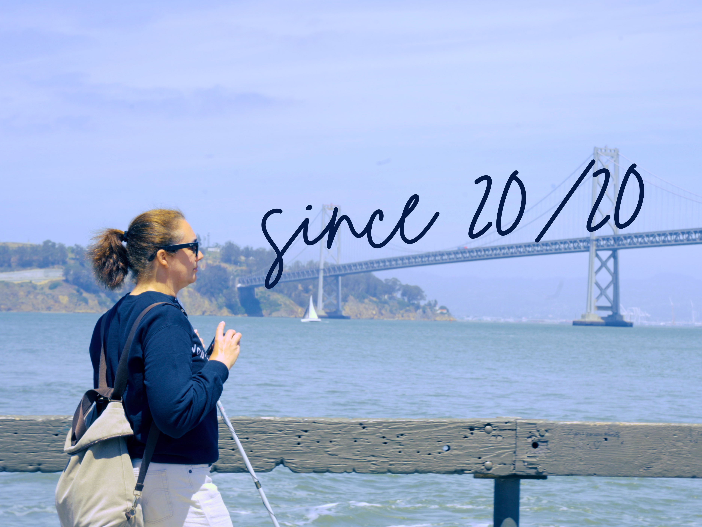
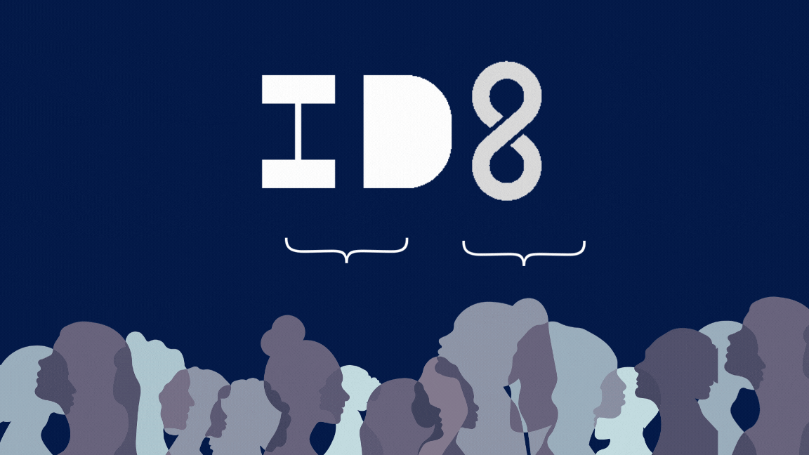

Tony's Kitchen Lab
Tony's Kitchen Lab

Since 20/20: A Multimedia Story Air Guitar
ID8: Anti-Bias Venture Discovery Platform Imagine: A GenAI Interactive Space
Imagine: A GenAI Interactive Space
Multimedia Journalist · Filmmaker · Engineer